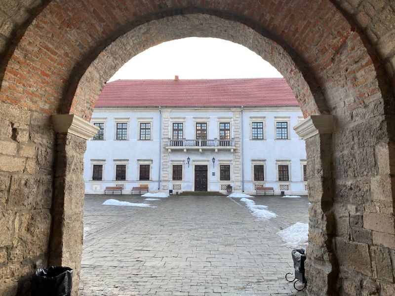

Zbarazh Castle is a fortified defense stronghold in Zbarazh, built during the times of the Polish–Lithuanian Commonwealth. It dominates the crests of the Zamkova Hills of Ternopil Oblast in Western Ukraine. The castle was included into a registry of national historical architectural heritage in the year of 1994.[3] The complex has a rectangular footprint, and surrounded on all sides by some marshland. This fortification demonstrated most advanced achievements of European marshal fortpost defense craft that included an escarped bulwarks, four bastions, and a moat encircling the building perimeter.
| City and Region | Coordinates |
|---|---|
| Zbarazh, Ternopil region | 49°40`00″N 25°46`20″EE |